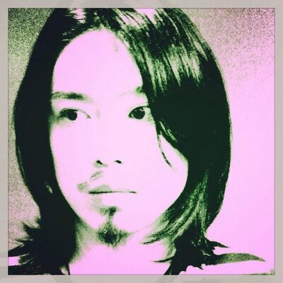

アコースティックライブを行う際はCO-Kがギター担当として同行する。LiSAの楽曲のレコーディングメンバーの一人でもある。LiSAのSNSに載る写真ではよく変顔をしている。ゲーム「スプラトゥーン」内で使用されている楽曲のレコーディングにも参加している。音楽スクール「慶音塾」では塾長を務めている。

フーファイターズのデイヴ・クロールになるといって髭を伸ばしていた。ロックバンド「Response」のメンバーでもある。ホテルでLiSAが水着姿で話しかけて、視線に困ったというエピソードがライブで暴露された。
元ART-SCHOOL。ロックバンド「QUADRANGLE」「GOLIATH」や「Poet-type.M」などでもベースを担当している他、JUJUやSuperflyの「Superfly BEST」の収録曲「Bi-Li-Li Emotion」のMVにもベース担当で参加している。LiSA曰く、キングに「新幹線に乗る時は靴を脱がなきゃいけない」と騙していた。
2015年初に行われた武道館公演以降、秘伝の鶏ガラを入手するためと称して一時メンバーから離れていたが、同年内に復帰し、以降、後述するのまーりんと交替でキーボードを担当している。キーボーディスト／アレンジャーとして様々なアーティストと共演している。LiSA曰く、うのちゃんのサングラスをかけるとマイケル・ジャクソンに似ている。
元々はLiSAの楽曲のレコーディングメンバーの一人だったが、2015年初に行われた武道館公演以降、けんちゃんと交替でライブ時のキーボードも担当している。YUKIやゆずなど様々なアーティストに楽曲提供を行っており、LiSAには「BRiGHT FLiGHT」「No More Time Machine」「リングアベル」「JUMP!!」「狼とミサンガ」を提供している。
元ART-SCHOOL。「tacica」のドラムサポートでアニメ「ハイキュー!! セカンドシーズン」を担当する。うのちゃんと同じくロックバンド「QUADRANGLE」「GOLIATH」でもドラムを担当している。LiSA曰く、新幹線に乗る時に「靴を脱がなきゃいけない」とうのちゃんに騙されていた。
Avaivartika（アヴァイヴァルティカ）というバンドのギタリスト。様々なアーティストのライブやレコーディングでサポートギタリスト、アレンジ、作曲もしている。安室奈美恵、miwa、LiSA、小南泰葉、玉木宏、ビッケブランカ、ちさ、anderlust、CNBLUE(アレンジ)、Juliet(楽曲提供)、etc

Bassを担当する。代表取締役も兼任。鹿児島県鹿児島市出身。にゅーメンズの中でもLiSAが信頼と尊敬を置いている一人で、ライブ中の相談や、声帯異常の際には進行を代わっていたこともある。
Girls Dead Monster でペアを組んだ marina の婚約者でもある。子供もいる。神奈川県綾瀬市出身、現在も地元綾瀬市や、厚木市のライブハウスなどでも活動を続けている。
生年月日：1981年4月13日 神奈川県大和市出身中学時代に「THE BLUE HEARTS」をきっかけにドラムを始める。高校卒業後ヤマハ音楽院に入学。卒業後は２年間、同校の副科ドラム講師も務める。在学中にギタリスト西川進氏と出会い、バンドを結成。その後、谷口宗一氏とのバンド「SHURIKEN」や、HIROKI氏（Dragon Ash）とのバンド「Dt.」、「カムロバウンス」など、様々なバンドを経験しながら多種多様なアーティストのライブ、レコーディング、PV、TV等に参加しはじめ、現在に至る。
神。怖い。圧がすごい。CO-K先輩を軽々しくいじる。あと、こわい、けどいいひと、面白い。